Galaxy
NOTE: This page continues to evolve. We welcome feedback on our Slack channel
Galaxy is a well known, Web-based platform of tools, aimed primarily at bioinformaticians, but has broadened in scope over the years. With generous help from the Galaxy community, we have ported PhysiCell Studio to run as an Interactive Tool. If you do not yet have an account, register for one - it is free and requires very little information. Once you have an account, login and follow the steps below to run PhysiCell Studio.
Initial comments
currently only 2D models are allowed
when you run PhysiCell Studio, it starts from scratch, i.e., it does not retain the results from a previous session. Therefore, if you want to save results from a session, e.g., a model (.xml) or its initial conditions or rules (.csv), or a simulation’s results (in the /output directory), you will need to explicitly do that before quitting PhysiCell Studio.
some functionality found in the desktop version is missing in the Galaxy version
a session remains active for about 24 hours
there is only one /output directory for simulation results
when you “Run” a simulation (in the Run tab), the current .xml model config file will be overwritten with any changes to model parameters, and all existing files in the /output directory will be deleted and new simulation results will be written to /output (but will not persist across multiple Studio sessions)
output results (5 files) will be automatically saved only when one quits the tool (“Studio menu -> Quit”)
to incrementally save your model as you are developing it (_highly_ recommended), use the “File -> Save project” menu item. This will save a project.zip onto your Galaxy History (details below)
Register for a Galaxy account
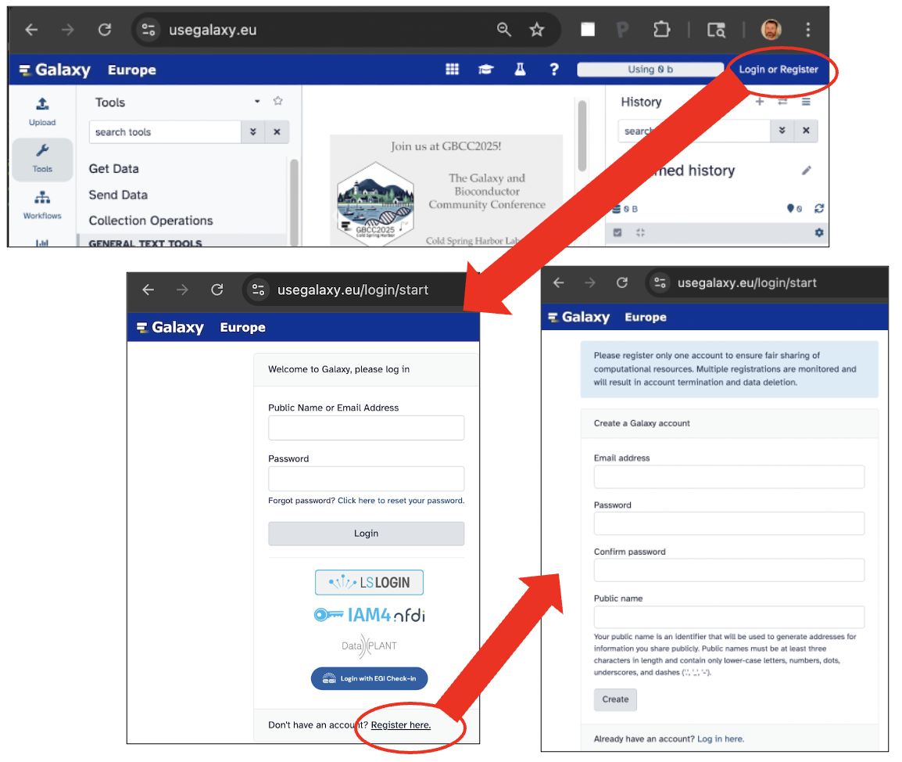
Registering for a Galaxy account should be straightforward. Try to register at https://usegalaxy.org/ .
Login and start PhysiCell Studio
After successfully registering for and getting an account on Galaxy, you are ready to use its tools. The one of interest for this tutorial is PhysiCell Studio.
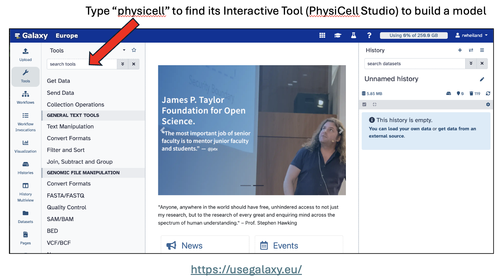
the Galaxy Tools column lists all available tools. You can search for “PhysiCell Studio”
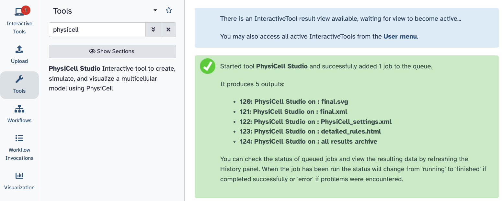
the tool takes some time (maybe a minute or two) to become active
notice that the tool “produces 5 outputs”. However, as noted in the initial comments above, these files only get generated if/when the user quits the tool. To save results during a session, use “File -> Save project”.
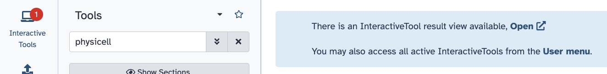
after the “Open” link appears, click it
Note
If the “Open” link seems to take too long to appear, check to see if you have a previous Studio or another Interactive Tool already running (select the “Interactive Tools” icon in the left column). You are not allowed more than one Interactive Tool to run simultaneously.
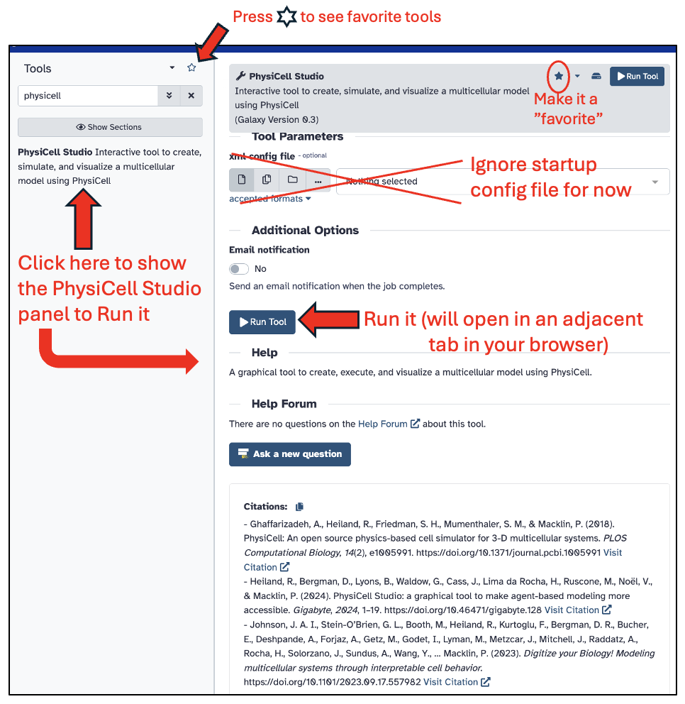
click the Run Tool to open PhysiCell Studio in an adjacent tab of your browser
Studio GUI settings
{kind=link}
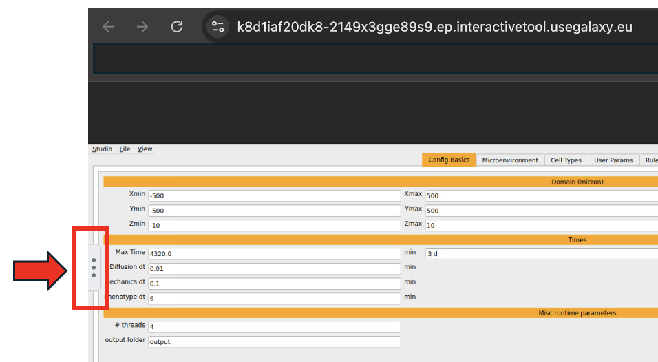
when the Studio appears in its own browser tab, its widgets will appear too small. To remedy this, click the “3 vertical dots” icon on the left border. It will display settings for the GUI.
{kind=link}
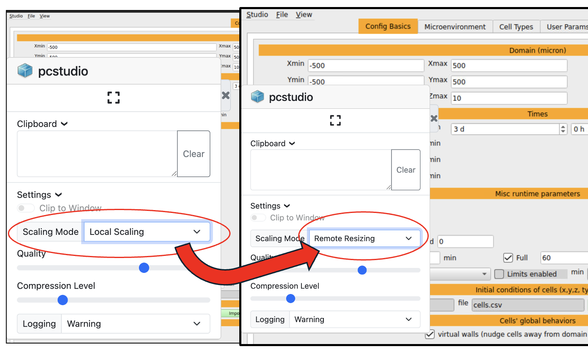
then select the “Scaling Mode” dropdown menu and select “Remote Resizing”. This should improve the overall usability of the GUI.
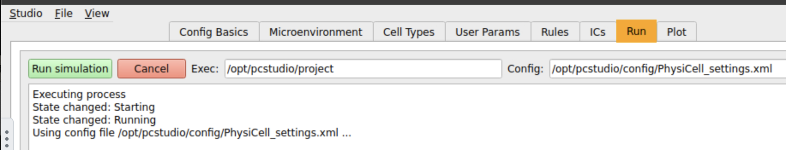
to run the default simulation, click the Run tab and press the “Run simulation” button.
Studio overview
At this point, you should be able to follow instructions elsewhere for basic use of the Studio. https://physicell-studio.readthedocs.io/en/latest/guide.html#config-basics . HOWEVER, you will want to return to this page for Galaxy-specific instructions, especially regarding loading files and saving simulation results.
Reconnect the Studio session
{kind=link}
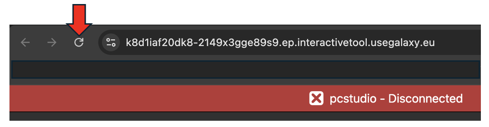
if you see “pcstudio - Disconnected”, it should automatically reconnect (in the latest version of Galaxy); however, if not, just refresh this page in your browser to manually reconnect.
Saving your project
It is GOOD PRACTICE TO INCREMENTALLY SAVE the model you are developing. This is especially true for an interactive cloud-hosted application like PhysiCell Studio running in Galaxy. So, as you edit parameters, run a [partial] simulation, plot results, and like what you see (or maybe don’t like it, but want to keep it anyway) - you can save the current state of your model using the File -> Save project menu option:
{kind=link}
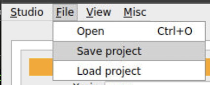
This will notify you of what happens next: it will create and copy my_model.zip to your History column on the main Galaxy panel.
{kind=link}
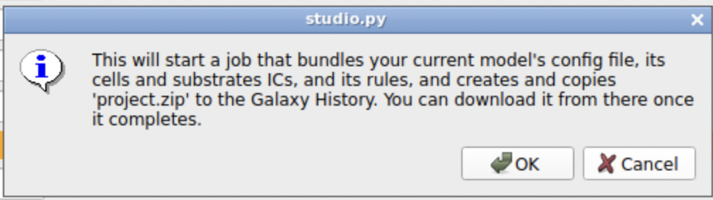
When you do this, a my_model.zip entry will appear in your Galaxy History (it may take a few seconds to appear). If you click on that entry, it will expand and reveal a download icon that, when clicked, will download it to your local computer and give it an expanded name, Galaxy<ID#>-<filename>.
{kind=link}
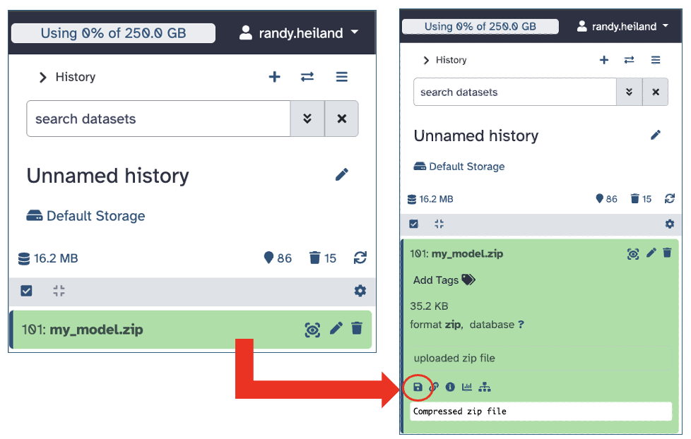
Unzipping that file on your computer will provide the files that define your project, typically: PhysiCell_settings.xml, cell_rules.csv, and cells.csv.
Loading a project
To load a previously saved project, use the File -> Load project menu option:
{kind=link}
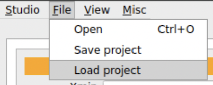
{kind=link}
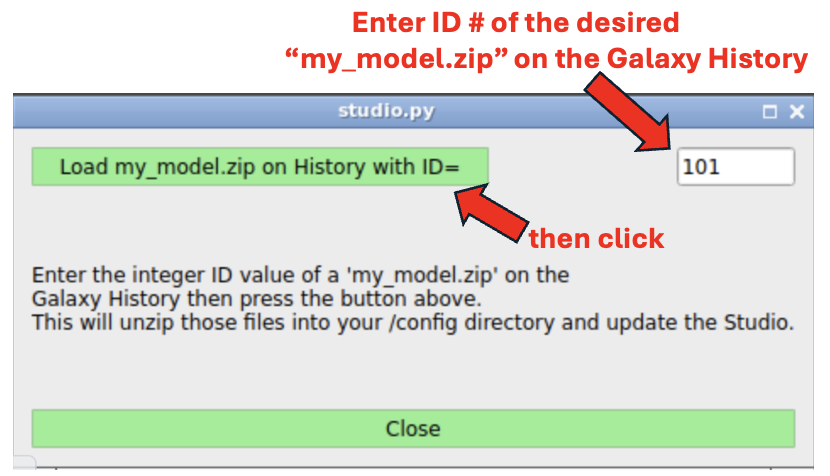
{kind=link}
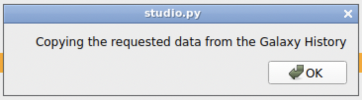
{kind=link}
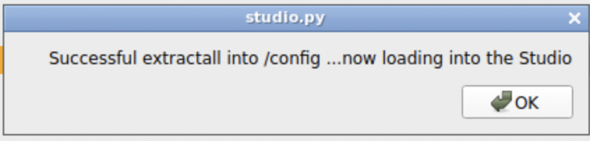